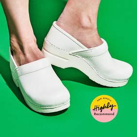

HEALTHYISH

GOOD FOOD
GOOD HEALTH
GOOD VIBES
Yes, I’m In School for Nutrition. No, I Don't Want to Hear About Your Diet
I’m not going to tell you what to eat, but I will tell you to stop stressing about it.


CULTURE

DON'T
MISS
It Never Occurred to Me to Have Cooking Shoes, Now I Can’t Cook Without Them
How Carla Lalli Music changed my shoe game forever.
CULTURE

The Indian-ish Shrimp and Quinoa Dish You Can Make in One Pot


RESTAURANTS

CITY
GUIDES
The Best Thing at Isla Vida is the Jerk Chicken…and the Ribs...and the...
We can’t get enough of San Francisco’s delightful new Afro-Caribbean grill.
RESTAURANTS


BASICALLY

LEARN
TO
COOK
Do You ACTUALLY Have to Pick Herbs?
Well, that depends. Are they hardy? Are they tender? And how lazy are you?